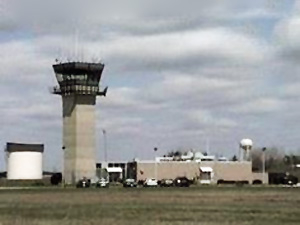
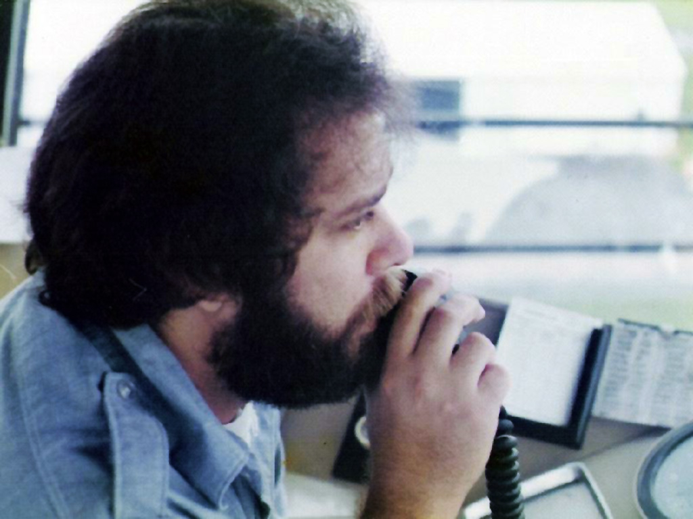
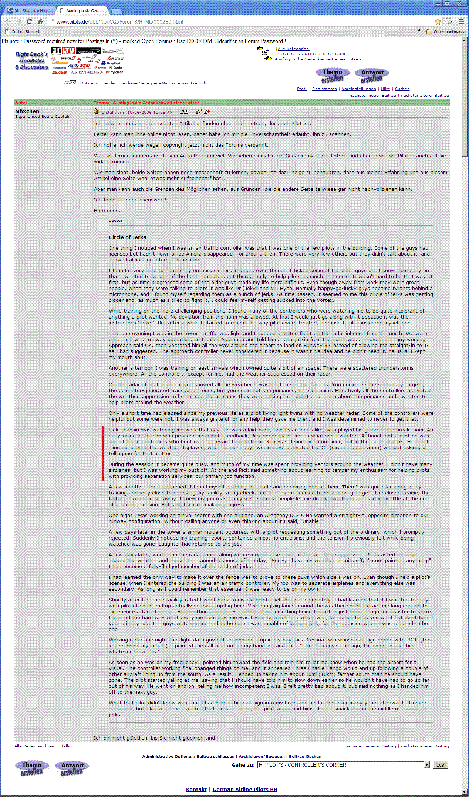

 The YNG (Youngstown, OH) air traffic control tower |
Interesting Article Mentioning Me as An Air Traffic Controller |
 Me at work in the YNG tower (late 1970s) |
|
I'm pretty sure I know who the author of the Circle of Jerks article is; he gives himself away at the end when he reveals that his initials are C.T. And though I trained an awful lot of people during my years at Youngstown Municipal Airport (I know it was Youngstown due to the runway 14/32 reference), I remember C.T. was a pilot, and the writing style seems like it might've come from him. In regards to the "Bob Dylan look-alike" comment, well, I'm not sure where that came from (this? Not even close), though I did sing a lot of Bob Dylan songs in those days. Oh, well....  1 The strike began on August 3, 1981. Read more about it on Wikipedia. 2 I did the Google search on my name on September 4, 2012. 3 I turned the article I found at http://www.pilots.de/ubb/NonCGI/Forum8/HTML/000250.html into a GIF to display here, just in case, at some point in the future, it disappears from the web. 4 I believe this article is from a discussion thread on a German airline pilot forum about the relationship between pilots and air traffic controllers. Of course, the Google Translate translations are not perfect.
|
||
{kind=link}
{kind=link}
{kind=link}
{kind=link}